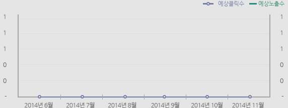

header(@template_layout.html)
| 업종 | 11월 예상광고비 | 11월 집행 키워드 수 |
|---|
| 조회 대상이 없습니다. |
광고노출 현황 추이
 다운로드
다운로드

| 날짜 | 수집 키워드 수 | 예상노출수 | 예상클릭수 | 예상 집행금액 |
|---|
| 조회 대상이 없습니다. |
키워드 별 월간 광고 노출 현황 2014 년 11월 한 달 기준
| 키워드 | 수집일자 | ||||||||||||||||||||||||||||||
|---|---|---|---|---|---|---|---|---|---|---|---|---|---|---|---|---|---|---|---|---|---|---|---|---|---|---|---|---|---|---|---|
| 1 | 2 | 3 | 4 | 5 | 6 | 7 | 8 | 9 | 10 | 11 | 12 | 13 | 14 | 15 | 16 | 17 | 18 | 19 | 20 | 21 | 22 | 23 | 24 | 25 | 26 | 27 | 28 | 29 | 30 | 31 | |
| 조회 대상이 없습니다. |
T&D 집행 현황 2014 년 11월 한 달 기준
| 매체 | 상품 | 제목 | 설명문구 |
|---|
| 조회 대상이 없습니다. |
- 참고하세요!
-
- 상기 지표는 데이터 수집 시점 기준 노출수, 클릭수, 순위, CPC 를 반영하여 추산하였습니다.
- ADSSOM 에 수집대상 키워드가 존재 하지 않거나, 수집 시점에 광고가 노출되지 않았을 경우 지표에 반영되지 않을 수 있고, 조회 결과에 누락될 수 있습니다.
- 키워드 별 월간 광고 노출 현황은 광고비가 높은 순서로 최대 200개 까지만 확인이 가능합니다.
- T&D 집행 현황은 수집된 광고물 마다의 T&D 를 형태소 단위로 분리하여 광고 전체에서 중복 빈도가 높은 순서로 보여줍니다.
- 광고 데이터는 1일 1회 네이버 광고 API 를 통해 일괄 수집됩니다.